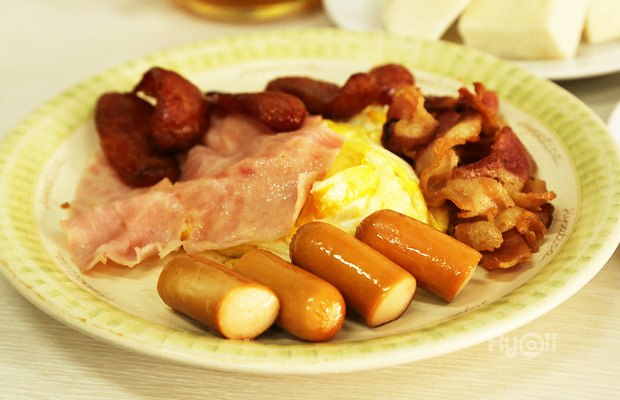
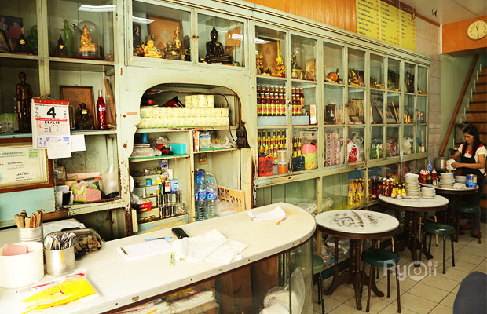

 ออน ล็อก หยุ่น ร้านสไตล์ย้อนยุค เปิดบริการมากว่า 80 ปีด้วยเมนูอาหาร เครื่องดื่ม ของหวาน ที่เป็นสูตรโบราณแท้ๆ ที่ชนะใจทั้งกลุ่มคนรุ่นใหม่ และต่างชาติ ให้หลงใหล และได้ซึมซับความเป็นไทยในสมัยเก่ามากขึ้น หากใครต้องการตักบาตรตอนเช้าก็สามารถซื้ออาหารที่ร้านเพื่อนำมาใส่บาตรจากที่ร้านได้สะดวกเลยค่ะ
 เนื่องจากร้านเปิดบริการทุกวัน ตั้งแต่เวลา 05.30 - 16.00 น. อาหารเช้าที่นี่เน้นให้ทานอิ่มหนักท้องอย่าง กาแฟโบราณ ไข่ดาว หมูแฮม ไส้กรอก เบคอน กุนเชียง ส่วนขนมปังสังขยาสีส้ม ถ้าใครมา ออน ล๊อค หยุ่น แล้วไม่ได้ลอง ถือว่ายังมาไม่ถึงค่ะ เพราะสังขยาสีส้มหอมหวาน ลองแล้วจะติดใจเหมือนมีแรงดึงดูดให้ต้องซื้อกลับไปแน่นอน ทานเวลาไหนก็คงรสชาติความอร่อยแบบคลาสสิกเสมอค่ะ